7. Vasking av data med OpenRefine#
|
Kapitlet bruker følgende datafiler: doaj-article-sample.csv |
I dette kapitlet introduserer vi et nytt verktøy som hjelper deg med å gjøre datasett klar for analyser. Dette er også noe man kan gjøre direkte med et programmeringsspråk, men mange vil nok foretrekke et forenklet brukergrensesnitt for gjøre det mer håndterbart. Derfor har vi valgt OpenRefine.
Hva er vasking?#
Data kan inneholde feil. Hvis feilene ikke oppdages og rettes vil dette føre til feil i analyser, eller i senere bruk av data til andre formål. Retting av feil kalles gjerne for datavasking. Med vasking mener vi at vi forsøker å øke konsistensen i data et datasett består av. Det handler altså om datakvalitet. For eksempel, at alle datoer skrives i samme format, eller at stedsnavn er skrevet likt. Inkonsistens kan komme fra skrivefeil, men det kan også være forårsaket av ulik registreringspraksis på tvers av personer, organisasjoner og domener. Eller rett og slett innlesningsfeil fra digitaliseringsverktøy.
Hovedprinsippet for vasking er «fitness for use». Det vil si at du skal gjøre data bra nok til å bli brukt til formålet det skal brukes til. Det betyr at hva som er “feil” alltid er avhengig av konteksten. Skal du undersøke språkutvikling ved å se på skrivemåten av et stedsnavn over tid i digitaliserte kirkebøker, blir det helt feil å «vaske» datasettet for at stedsnavnet skal fremkomme likt. Er du heller interessert i å se på antall konfirmerte på stedet over tid er det derimot en stor fordel at stedsnavnet er konsistent.
I dette kapitlet får du en innføring i å bruke OpenRefine til å identifisere inkonsistenser og rette de (i de tilfellene du trenger det), og forberede data for videre analyse.
Hva er OpenRefine?#
OpenRefine er et verktøy som kan brukes til håndtering av store datasett. Med håndtering menes “vasking” (fjerning av inkonsistenser), omforming (endring av filformat) og til og med legger til data fra nettjenester, f.eks. Wikidata[1]. I dette kapitlet går vi detaljert gjennom en del av funksjonaliteten til OpenRefine som er relatert til vasking.
Installer OpenRefine#
OpenRefine laster du ned her. Velg Download fra menyen. Hvis du har en Windows PC velg Windows kit with embedded Java, da OpenRefine forutsetter at programvaren Java er installert. Vet du at du har Java fra før av på din PC, kan du velge den vanlige versjonen. Du laster ned programmet som en zip-fil og må deretter pakke ut filen. Se instruks på websiden.
Start OpenRefine#
OpenRefine fungerer på en lignende måte som Jupyter Notebooks. Grensesnittet til applikasjonen er en nettside. Data som behandles av OpenRefine ligger lokalt på din datamaskin. OpenRefine startes ved å dobbelklikke på openrefine.exe
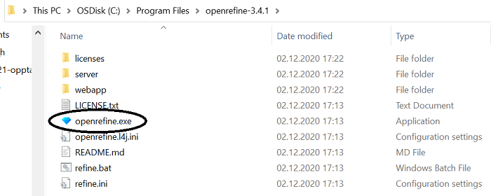
På samme måte som med Jupyter Notebooks, åpnes det et svart vindu som viser oppstarten av applikasjonen på datamaskinen. Etter hvert åpnes et nettleservindu med åpningssiden til OpenRefine. Legg merke til adressen (URLen) i nettleseren: http://127.0.0.1:3333/ . 127.0.0.1 er IP-adressen til den lokale datamaskinen, mens 3333 er portnummeret[2].
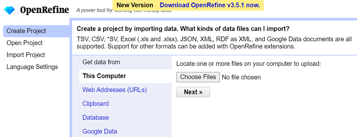
Hovedvalgene vises til venstre i nettsiden. De to viktigste er:
Open Project: fortsett med et tidligere opprettet prosjekt
Create Project: opprett et nytt prosjekt
Opprett et nytt prosjekt i OpenRefine#
OpenRefine kan importere data i ulike formater fra ulike kilder. Her skal vi se på den enkleste fremgangsmåten, ved å ta utgangspunkt i en CSV-fil som finnes lagret på din lokale datamaskin.
I denne introduksjonen skal vi bruke en CSV-fil med data om open access-artikler som er produsert av Directory of Open Access Journals (DOAJ).
Nedenfor vises CSV-filen (doaj-article-sample.csv) i teksteditoren Notepad++. Det betyr at den ser anderledes ut enn hvis vi åpner den i Jupyter Notebook. Legg merke til kolonnenavn i første linje (Title, Authors, DOI, …). Resten av linjene i filen er selve data, og utgjør rader hvor hver rad er data om en artikkel. Komma er brukt som skilletegn (“seperator” på engelsk fagspråk) mellom kolonner. I tilfelle vi har et komma i selve dataen inni en kolonne, markeres starten og slutten av verdien med anførselstegn, som i Citation-kolonnen.
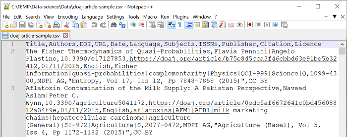
Eksempelet brukt her er basert på Library Carpentry sin introduksjon til OpenRefine[3].
✍️ Oppgave: Last ned CSV-filen som ligger i datasett-boksen på toppen av denne siden. Velg så Create Project i åpningsvinduet. Klikk på Choose Files-knappen på startsiden, og finn frem til CSV-filen som skal behandles. Klikk på Next-knappen for å fortsette. Følg så instruksene videre på denne siden.
Følgende vindu vises:
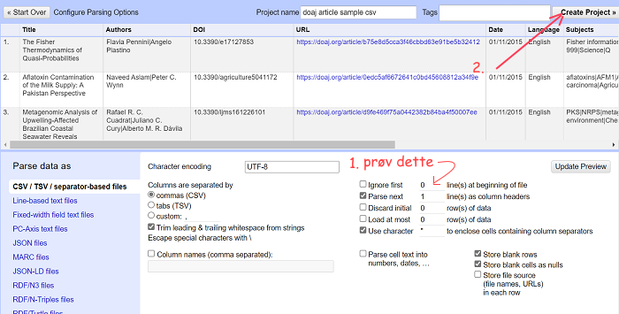
Figuren overfor oppsummerer prosedyren ved etablering av et nytt prosjekt. OpenRefine tolker filen med data og presenterer en forhåndsvisning av data i øvre halvdel av vinduet, mens den “gjetter seg frem til” innstillingene den antar vil være ønskelig for deg som bruker, som den viser i nedre halvdel.
innstillingene kan om nødvendig endres, og endringen vises umiddelbart i forhåndsvisningen. Prøv for eksempel å hake av “ignore first” og å fylle 1 eller 2 istendenfor 0, og se at den øverste linjen endrer seg. Still tilbake (dersom det er slik det skal være).
Når innstillingene er riktige, velg Create Project-knappen for å opprette prosjekt. Datafilen som prosjektet bygger på endres aldri, prosjektet kan derfor opprettes på nytt senere hvis du oppdager at innstillingene skulle ha vært annerledes, eller om du angrer på endringer du har gjort i dataene i prosjektet.
Når prosjektet er opprettet vises hovedvinduet til OpenRefine (se under). Her vises de første ti radene med data. Det er mulig å bla frem (next) og tilbake (previous) for å se mer data.
⚠️ Merk! Prosjektet henter inn data fra filen, men er ikke selve filen. Endringer som gjøres vil derfor ikke endre det som er i filen. Istedet må man til slutt lagre prosjektet som en ny CSV-fil. Dette vil vi komme tilbake til lengre ned i kapitlet.
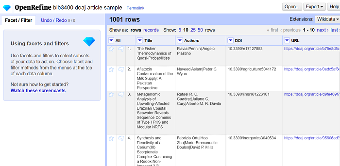
Undersøk dataene#
Fasettering og filtrering#
Mestparten av arbeidet i OpenRefine utføres ved å velge fra kolonne-menyen som vises når du klikker på knappen som er plassert til venstre for kolonnenavnet. Her har vi valgt menyen til kolonnen Language.
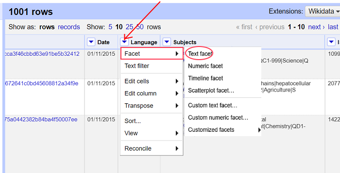
Velg Text facet som finnes under Facet-menyvalget. Da vises en liste over de unike verdiene fra Language-kolonnen med frekvens. Dette vises til venstre for selve data.
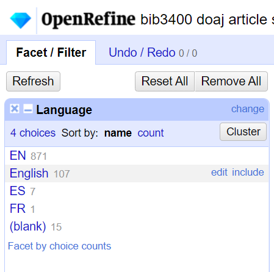
Mens en kolonne uttrykker et aspekt ved dataene (“Language”), betyr altså en fasett i OpenRefine en unik verdi ved dette aspektet[4].
På bildet ser vi at datasettet inneholder to verdier for engelskspråklige artikler: forkortelsen EN og navnet English. Vi ser også at vi har 7 artikler på spansk (“ES”) og 1 på fransk (“FR”). Hvis vi lar musepekeren hvile over verdien, vises to valg til høyre for denne: edit og include. Hvis vi velger include, vises kun radene som har denne verdien.
✍️ Oppgave: Følg instruksen over for å finne verdier for Language. Velg reset for å vise alle rader igjen, og gjenta handlingen for FR.
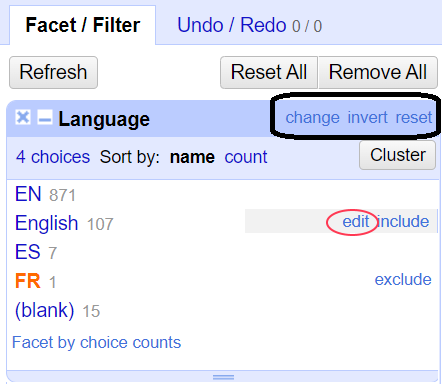
Vi kan også utføre masseendringer av verdier ved å la musepekeren hvile over verdien og velge edit. F.eks. kan vi endre verdien English til koden EN. Den opprinnelig verdien (“English”) vises. Erstatt den med den nye verdien (“EN”), og velg Apply-knappen. Dette er den enkleste formen for vasking av datasett fordi det innebærer å sørge for at fasetter som er synonyme med hverandre (Her: “EN” og “English”) blir til en spesifikk fasett (“EN”).
✍️ Oppgave: Følg instruksen over og erstatt English med EN.
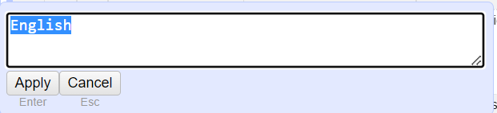
Angre#
Det er mulig å angre på oppdateringer ved å velge Undo / Redo i Facet-vinduet.
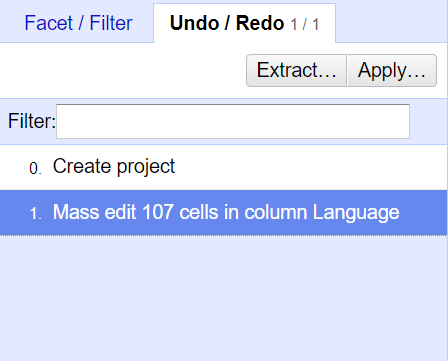
Velg en tidligere fase i prosjektet for å rulle tilbake til det stadiet i redigeringen. I figure kan vi klikk på 0. Create project for å gå tilbake til stadiet før oppdatering. Omvendt kan vi klikke på 1. Mass edit 107 cells in column Languange for å uføre oppdateringen om igjen.
⚠️ Merk! som nevnt tidligere er den opprinnelig CSV-filen uendret og vi kan alltid opprette et nytt prosjekt fra den samme filen hvis vi angrer på endringene vi ha gjort i prosjektet vi holder på med.
Lagring av prosjekt til fil#
Når vi har utført en oppdatering (også kalt “vasking”) og vil lagre resulatet i en fil, kan vi velge Export-knappen som finnes øverst til høyre. OpenRefine støtter mange ulike formater. Ofte vil vi lagre data i en CSV-fil, dvs. velge Comma-separated value fra listen. Filen får et filnavn som er likt navnet på prosjektet. Endre gjerne navnet etter behov. Det er lurt å bruke et annet navn enn det opprinnelige filnavnet for prosjektet.
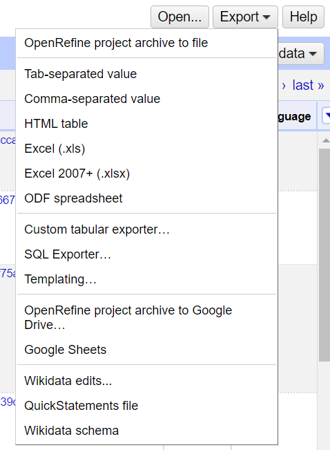
✍️ Oppgave: Følg instruksen over og lagre prosjektet som en CSV-fil med et nytt passende navn.
Flere måter å vaske på#
Under følger en videre gjennomgang av andre måter å vaske på.
Avgrens radene med søk#
Velg Text filter under kolonnemenyen. Her får du opp et vindu under Facet / Filter der du kan søke etter rader som har en bestemt verdi. Vi kan legge til flere tekstfiltre for å avgrense ytterligere. Dette tilsvarer å utføre en boolsk OG-kombinasjon.
I figuren vises en kombinasjon av et søk etter koden EN i Language-kolonnen og emnet snow models i Subjects-kolonnen. For å se radene som svarer til denne kombinasjonen, må du velge Text filter under både Language- og Subjects-kolonnene. Alle oppdateringer du velger å gjøre vil bare skje med de som passer til filtreringen din.
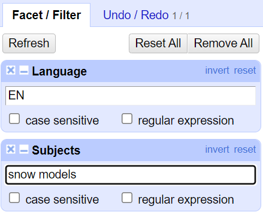
En slik avgrensning kan brukes for å fjerne rader. Utfør avgrensning, deretter velg Remove matching rows fra Edit rows-meny under kolonnen All. Se under:
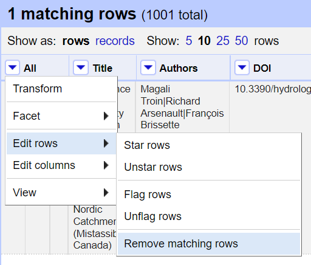
Andre avgrensninger#
Manglende data er et typisk datakvalitetsproblem. Det vil si at en celle i en kolonne ikke har data, selv om andre i samme kolonne har det. Hvordan kan vi finne radene som mangler data for en kolonne? Fra menyen til relevant kolonne velg Facet, deretter velg Customized facets, og til slutt velg Facet by blank (null or empty string). Legg merke til de andre avgrensningene som er mulige.
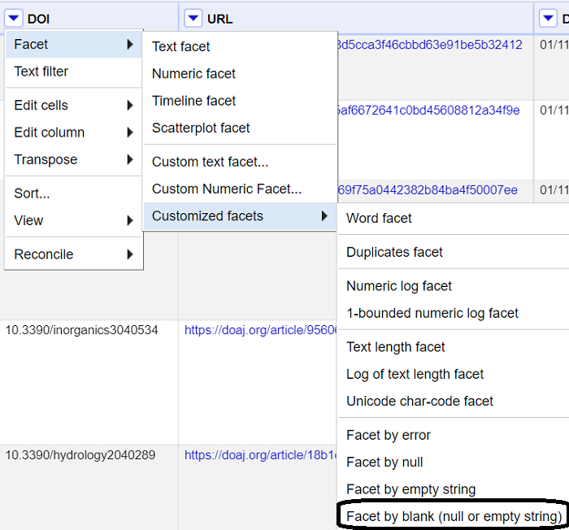
Resultatet viser enten true, dvs. at verdien mangler, eller false, det finnes en verdi. Vis de som har verdien true og bruk kolonnemenyen til All-kolonnen for å slette radene.
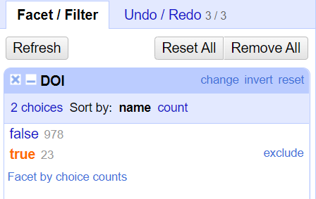
Endre verdier#
Ovenfor så vi hvordan vi kunne endre verdier etter bruk av Text facet. Alternativt kan vi bruke valgene som finnes under Edit cells i kolonnemenyen.
Noen vanlige endringer finnes under Common transforms. F.eks:
fjern ekstra mellomrom fra starten eller slutten av en tekst
endre teksten til kun store bokstaver
endre datatypen
gjør verdien til blank
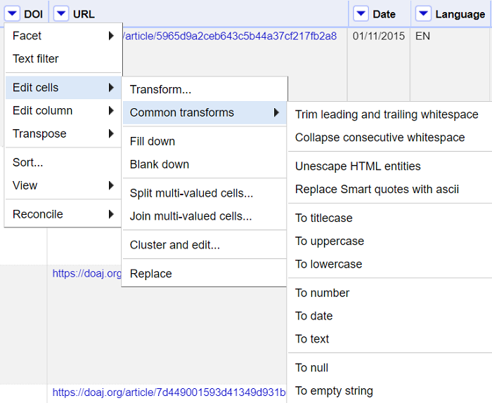
Det er også mulig å utføre mer skreddersydde endringer ved å velge Transform…. I den nederste delen av vinduet vises nåværende verdi til venstre og resultatet av endringen til høyre. Klikk på OK-knappen for å utfør endringen eller Cancel for å lukke vinduet uten å utføre oppdateringen. I eksempelet under erstatter vi tomme verdier (null) med tekststrengen Ukjent.
⚠️ Merk! celler uten data er en særegen type celle i datasett. Det er i mange tilfeller lettere å utføre analyser om cellene som ikke har data får data som uttrykker at de er tomme, som det å legge inn tekststrengen Ukjent.
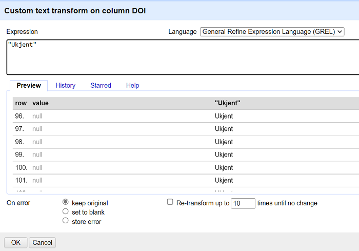
Mens enkel vasking kan gjøres i enkle finn-og-erstatt-oppdateringer for å standardisere data, er det her altså mer kompliserte vaskinger som kan utføres. Da bruker man noe som heter Transformations i OpenRefine, som foretar manipuleringer. Denne manipuleringen innebærer blant annet:
Å separere data som er i en kolonne inn i flere kolonner (f eks hvis en kolonne har flere verdier)
Standardisere dataformat i en kolonne uten å endre verdier
hente ut en del av en lengre tekst-streng og sette den inn i en egen ny kolonne
Under følger noen eksempler på hvordan det gjøres.
Kolonner med flere verdier#
I utgangspunktet skal en kolonne bestå av enkelte verdier. Men hvordan kan vi håndtere situasjonen der en kolonne inneholder celler med flere verdier? Vi ser eksempler av dette i DOAJ-datasettet. Noen av artiklene har flere forfattere, f.eks. den første artikkel er skrevet av Flavia Pennini og Angelo Plastino. Artikkelen har også sju emner. Løsningen som er brukt i DOAJ-datasett er å legge alle verdier i samme celle, adskilt med et eget skilletegn, som vi her kaller internt skilletegn. Her brukes | som internt skilletegn. Innholdet i Subjects-kolonnen for den første artikkelen ser derfor slik ut:
Fisher information|quasi-probabilities|complementarity|Physics|QC1-999|Science|Q
Hvis vi ønsker å vaske slike data bruker vi gjerne følgende fremgangsmåte:
splitt cellen inn i enkelte verdier
vask de enkelte verdiene
sett dem sammen igjen
For å splitte en celle med et internt skilletegn, velger vi Split multi-valued cells… fra Edit cells-menyen, som finnes i kolonne-menyen. Endre “,” til “|” som skilletegn.
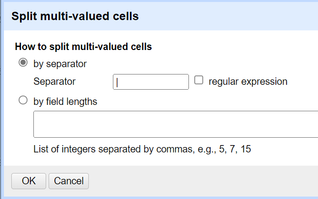
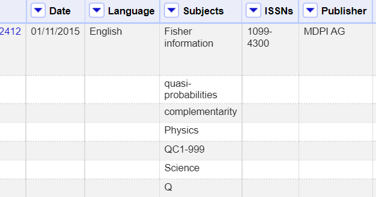
Utfør endring.
For å sette verdiene sammen igjen, velg Join multi-valued cells… fra Edit cells-menyen under kolonnemnenyen. Endre komma til ønsket skilletegn, f.eks. “|”.
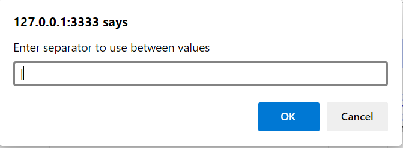
Gruppering#
Her kan man bruke en algoritme i OpenRefine som forsøker å lage grupperinger av ulike fasetter (“clustering” på engelsk fagspråk). Denne algoritmen er særlig god å bruke når data verdiene er navn på personer og organisasjoner. Det finnes for eksempel utallige måter å skrive “NTNU” på. Ved å bruke grupperingsalgoritmen vil du få opp forslag til grupperinger, som du så kan se gjennom og så velge å endre til.
Merk at OpenRefine har flere ulike typer grupperingsalgoritmer og man må prøve seg frem for å finne den som fungerer best på dataen man selv har. Det er også viktig å gå gjennom og eventuelt fjerne de som har blitt grupper feil av algoritmen. Ikke stol blindt på forslagene.
I eksemplet under er grupperingsalgoritmen utført på forfatter-kolonnen.
Her separeres verdier. Så Fjernes mellomrom fra start og slutt. Velg Cluster and edit… fra Edit cells-menyen.
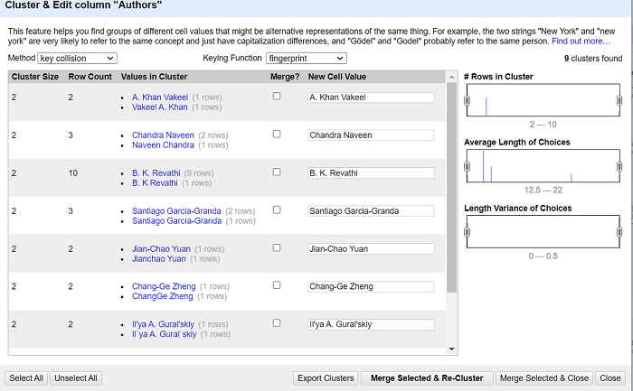
Her grupperes verdier som algoritmen sier ligner på hverandre. For navn kan den gruppere flere ulike variasjoner av samme navn. Dette kan være rekkefølge av ord f.eks. Chandra Naveen og Naveen Chandra. Det kan være et manglende punktum etter et forkortet navn, f.eks. B. K. Revathi og B. K Revathi. Her kan vi også bestemme hvilken verdi som skal representere grupperingen.
⚠️ Merk! Bruk dette varsomt. Chandra Naveen og Naveen Chandra kan være to helt forskjellige personer. Til og med bare Chandra Naveen alene kan være flere personer som tilfeldigvis deler samme navn!
Anbefalt videre litteratur#
Verborgh, R., & De Wilde, M. (2013). Using openrefine. Packt Publishing Ltd.